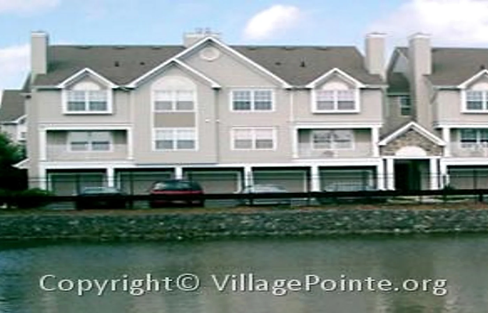
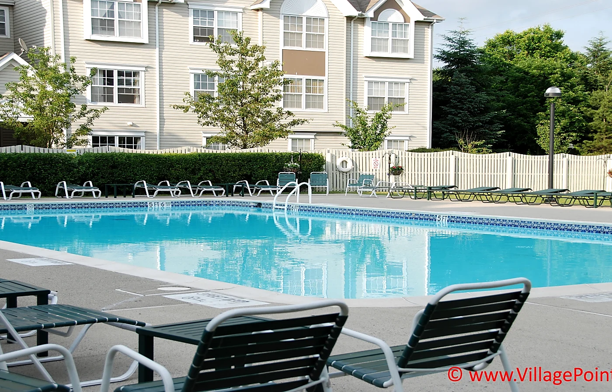
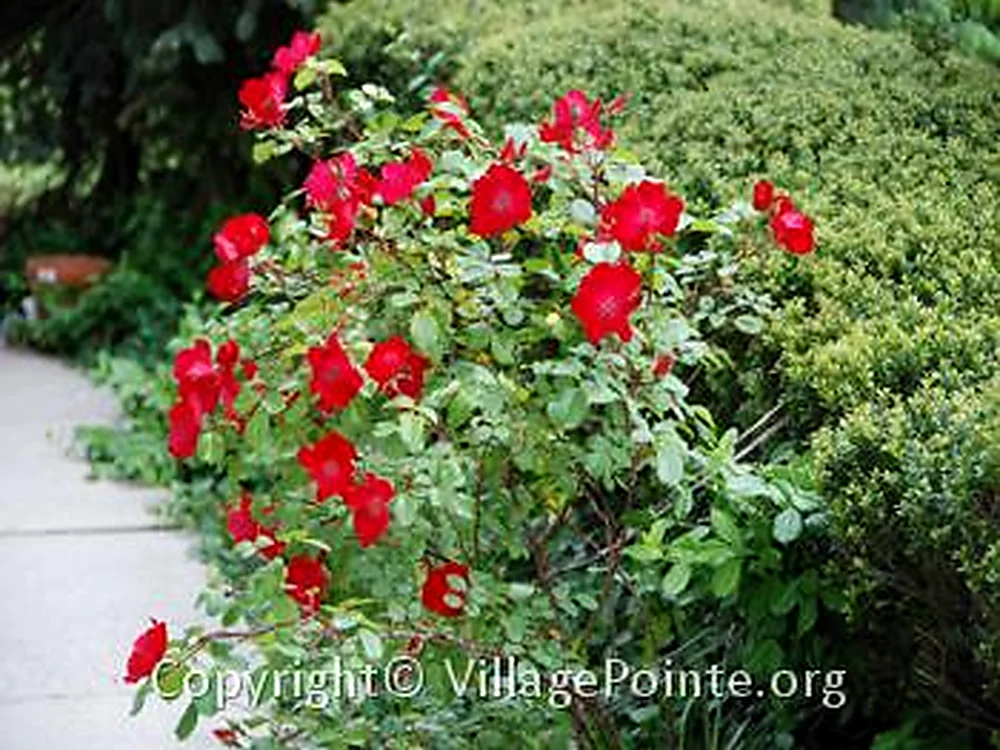
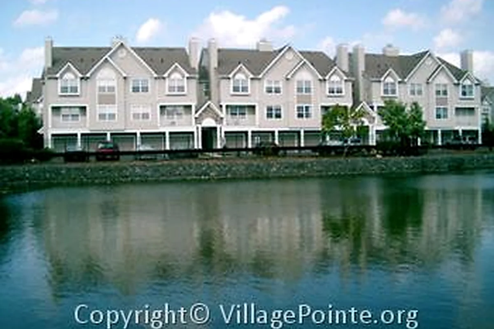

Welcoming Setting
A residential community designed around privately owned townhomes and shared outdoor surroundings.
Discover the setting, features, and public information that help explain Village Pointe to residents and people considering the community.
Village Pointe is an individually owned residential townhome community in North Edison. Original site materials describe approximately 450 residences, multiple home configurations, landscaped walkways, broad green areas, wetlands, a private outdoor pool and cabana, a tot lot, and nearby recreation.
Resident-provided 2026 information describes Village Pointe as having the lowest monthly Association assessment among comparable nearby condominium communities, an unusually strong cost advantage for a community with shared grounds and amenities. The current dollar amount is intentionally not published here because assessments and market comparisons can change. Prospective owners should verify the current assessment and included services through the official resale and Association materials.
Community conditions, rules, access, fees, services, and amenity schedules may change. Prospective purchasers and renters should review current governing documents and property specific information before making decisions.

A residential community designed around privately owned townhomes and shared outdoor surroundings.
Original materials describe a private outdoor swimming pool and cabana. Verify current access and rules.
Walkways, lawns, landscaping, wetlands, water views, and wooded outlooks contribute to the setting.
North Edison connects residents with rail, major roadways, shopping, airports, and New York City.



Continue with regional access, home information, or Views & Beyond for visual context from Village Pointe and the surrounding region.